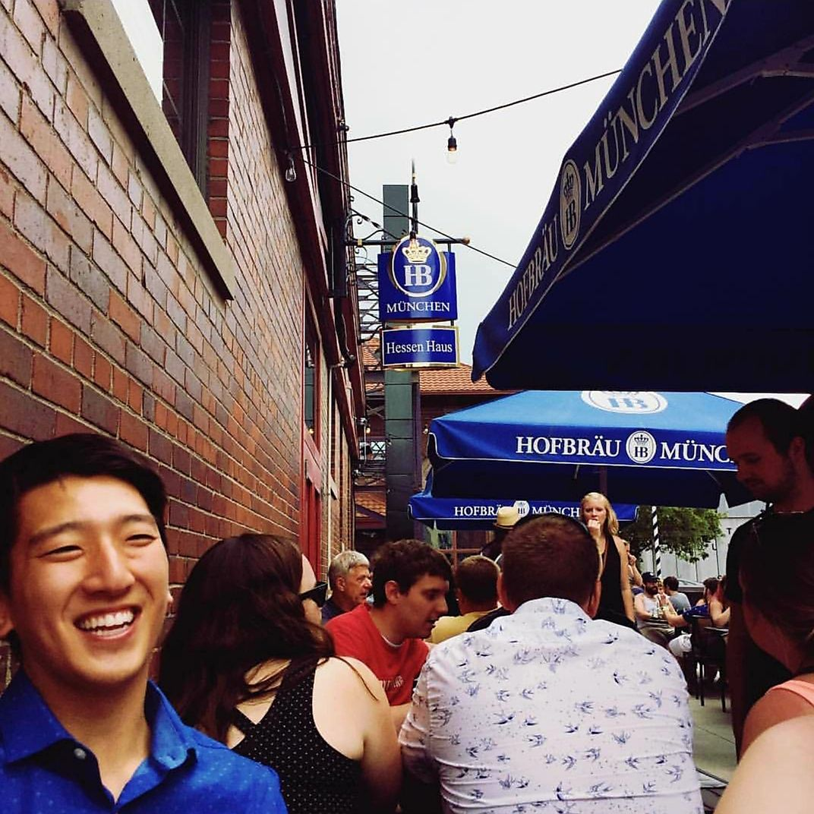

About Me
UX Researcher
I am Quin, as a first year masters at University of Michigan- Ann Arbor studying Information Science, I am an aspiring UX Researcher who loves to solve human centered problems in creative, yet logical ways. Asking questions and piecing together solutions is what I love to do, especially within interdisciplinary research.
During my undergraduate at Iowa State University, it was a Design Heuristics workshop that inspired me to intertwine my research experiences, passion for design, psychology background, and multi-faceted problem-solving skills into a career; however, at the time, I was not sure how. Post graduation, as a Marketing and Sales Associate, I accidently stumbled upon UX and from that moment I knew this is the career I was searching for.
Thank you for your patience as I am releasing pages.
Currently looking for a summer internship in UX Research